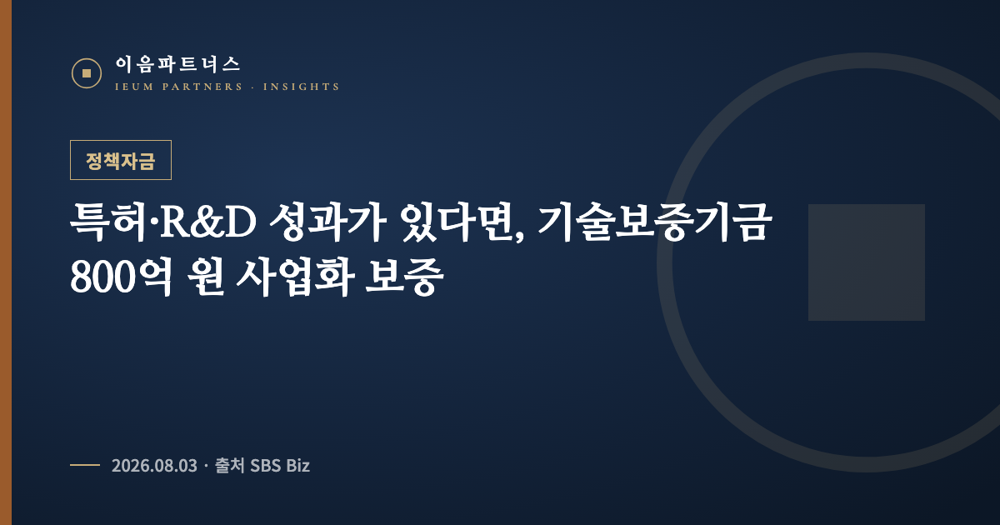

특허·R&D 성과가 있다면, 기술보증기금 800억 원 사업화 보증

정부 연구개발(R&D) 과제를 마쳤거나 대학·연구소에서 기술을 이전받았는데, 막상 제품으로 만들어 팔 자금이 부족한 회사가 많습니다. 기술보증기금(이하 기보)은 2026년 8월 3일 이런 기업을 위한 ‘R&D 사업화 유동화 보증’을 새로 만들고 올해 800억 원 규모로 공급하겠다고 밝혔습니다. 이 글에서는 이 보증이 어떤 구조인지, 어떤 회사가 살펴볼 만한지 정리합니다.
이번 제도는 「중소기업 기술혁신 촉진법」 개정에 따라 사업화 단계의 금융 지원을 강화하려는 취지입니다. 우리 회사의 특허나 R&D 성과를 이런 보증과 연결할 수 있을지 궁금하다면 카카오톡 채널 이음파트너스에서 함께 정리해 볼 수 있습니다.
왜 이런 보증이 생겼나
보도에 따르면 기술 혁신기업들은 “우수한 R&D 성과를 보유하고도 사업화에 필요한 자금을 확보하는 데 어려움”을 겪어 왔습니다(SBS Biz). 그래서 사업화 단계에 맞춘 금융 지원이 필요하다는 지적이 이어졌고, 기보가 전용 상품을 내놓은 것입니다.
‘유동화 보증’은 어떤 구조인가
유동화(여러 기업의 채권을 한데 묶어 투자자가 살 수 있는 증권으로 만드는 것)는 혼자서는 회사채를 내기 어려운 중소기업이 시장에서 돈을 모을 수 있게 해 주는 방식입니다. 기보는 여러 기업이 발행한 회사채 등을 묶어 유동화하고, 여기에 보증을 붙여 신용을 보강합니다.
| 구분 | 내용 |
|---|---|
| 규모 | 2026년 800억 원 |
| 기초자산 | 정부 R&D 완료 과제·공공연구기관 이전 기술을 사업화하는 기업의 회사채, 공공연구기관의 기술이전 기술료 채권 |
| 심사 | 기술성·시장성·사업성과 기초자산 가치를 종합 심사 |
| 우대 | 등급별 최고 보증 한도, 기준보증료율 우대 |
| 평가료 감면 | 연구소기업, 첨단기술기업, 지방 소재 중소기업 등 |
기업의 회사채뿐 아니라 공공연구기관이 가진 기술료 채권까지 유동화 대상에 넣었다는 점이 눈에 띕니다. 기술을 이전한 쪽과 받은 쪽을 함께 묶어 사업화 자금의 길을 넓히겠다는 뜻으로 읽힙니다.
어떤 회사가 살펴볼 만할까
정부 R&D 과제를 완료했거나 공공연구기관에서 기술을 이전받아 사업화를 준비하는 회사가 직접 대상입니다. 기술성과 시장성을 함께 보는 만큼, 그 기술로 무엇을 얼마나 팔 것인지를 보여 주는 사업계획이 중요할 수 있습니다. 신청은 회사가 직접 하고, 지원 여부와 금액은 각 기관 심사로 정해집니다. 구체적인 신청 시기와 서류는 기보 공고와 영업점 상담으로 확인하시길 권합니다.
대표님이 지금 확인할 것
- 우리 회사가 완료한 정부 R&D 과제나 이전받은 기술이 있는지, 협약서·기술이전 계약서를 찾아 두었는지
- 그 기술로 만들 제품·서비스의 매출 계획을 숫자로 설명할 수 있는지
- 연구소기업·첨단기술기업이나 지방 소재처럼 평가료 감면에 해당하는 조건이 있는지
- 이미 받은 보증·대출 잔액과 추가로 필요한 자금 규모를 정리했는지
참고한 자료
- R&D 성과 사업화에 800억 보증…기보, 유동화 보증 신설 — SBS Biz (2026.08.03)
기술은 있는데 사업화 자금 계획이 막막하다면 카카오톡 채널 이음파트너스로 편하게 물어봐 주세요.
※ 이 글은 일반적인 정보 제공을 위한 것으로, 개별 사안은 세무사·노무사 등 전문가와 함께 확인하시기 바랍니다.